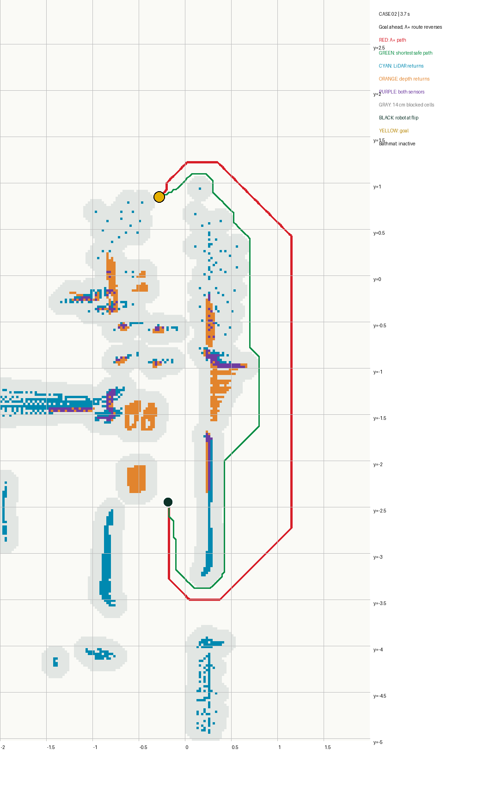
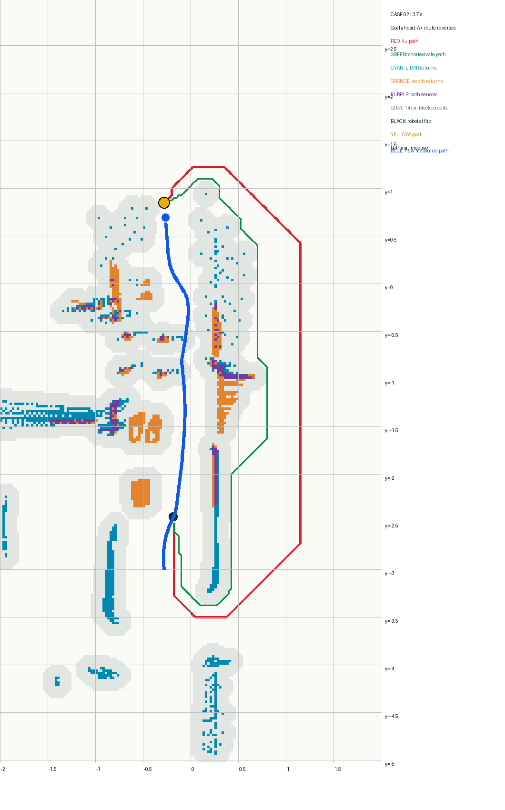

DEVLOG · 2026.09.26 · SPEED / DEBUG / LIVING ROOM
Increase the speed.
Explore the living room.
The prior comparison established PPO participation without a benefit over A*. Next, calibrate straight-line speed, rerun faster hybrid navigation, visually diagnose case 2's turn-away, and extend testing to the sofa and under-desk goals.
Previous: PPO versus Isaac control ↗ · Jump to the robot's view ↓
01 / SPEED
Calibrate straight-line motion before raising cruise speed.
The 0.065 m/s limit helped isolate sensing, planning and contact issues; it was not a measured physical maximum. Increase speed when heading and route permit, using calibration rather than copying a larger Gazebo command.
Issue three-second straight-line commands in the same empty scene. Measure displacement, lateral drift, heading and coasting. Commanded speed is the target; measured mean is actual simulated travel speed.
| Commanded speed | Measured mean | Lateral error | Heading change | Coasting after stop command |
|---|---|---|---|---|
| 0.065 m/s | 0.055 m/s | Approx. 0.05 cm | 0.34° | 0.05 cm |
| 0.10 m/s | 0.090 m/s | Approx. 0.08 cm | 0.36° | 0.09 cm |
| 0.15 m/s | 0.140 m/s | Approx. 0.09 cm | 0.19° | 0.18 cm |
| 0.22 m/s | 0.208 m/s | About 0.30 cm | 0.22° | 0.43 cm |
Based on these results, the latest Gazebo PPO Proposal + Isaac Map Review/A* Take over Cap linear speed at 0.22 m/s. Raise straight-line cruise only when PPO asks to move quickly, angular velocity is small and heading agrees with the route; retain turning and clearance checks. Case 1 arrives in 22.7 seconds with 105 PPO actions, 8 takeovers and sampled 0 N. The earlier 0.065 m/s run took 66.9 seconds, but cruise logic also changed, so it is not a controlled comparison changing only speed. .
0.22 m/s showed acceptable deviation in an open straight-line test and completed one corridor layout. It is not a validated maximum safe hardware speed or a result across all layouts.
02 / VISUAL DEBUG
Why does it suddenly turn backwards?
Faster case 2 testing exposed a visibly open forward route while the robot turned back. Wall, mat and PPO hypotheses led to control logging: the safety layer selected an A* turn. Overlay pose, goal, LiDAR, depth, inflated occupancy and planned path to inspect why.

Case 2, 3.7 seconds: black robot, yellow goal, red A* route, green alternate feasible route, cyan LiDAR, orange depth and gray blocked cells using 14 cm center clearance.
Enlarge diagnostic map ↗
At this moment, the goal is approximately +21.8° , while A* requested a local direction of about −158.0° . The map makes the conflict concrete: a visually open route is marked blocked. The mat collider was inactive here, so it cannot simply explain the turn. Gray is not the robot shape; it is obstacle inflation by 14 cm center clearance. Side points and stale observations can close a visually open gap.
Follow-up testing At the same time, Reduce center clearance to 12 cm and rebuild LiDAR occupancy each scan instead of permanently accumulating points. Case 2 reaches the goal in 21.9 seconds: 102 PPO actions, 7 A* takeovers, sampled force 0 N. Two factors changed, so the result does not isolate either as the cause.

Two routes in the same case 2 layout. Preserve the failure, then use map and trajectory evidence to check how the changes affected behavior.
Full corrected case 2 recording: the robot follows the corridor and arrives in 21.9 seconds, using the same layout as the diagnostic map above.
Open successful case 2 recording ↗03 / LIVING ROOM
From the sofa to under the desk.
Test more complex furniture and turns in the living room. After initial no-route stops, map-range and sensing adjustments yield a sofa-side arrival in 13.1 seconds: 57 PPO actions, 8 A* takeovers. Start the second route there, targeting the floor beneath the computer desk; move the chair slightly to leave a real gap.
Second living-room overview: from the sofa, past the coffee table and rug, to beneath the desk. Goal reached in 26.7 seconds.
Open living-room overview recording ↗Treat the rug as traversable: disable its collider in the test layer and filter its low depth points. This excludes rug contact from failure checks. Two under-desk attempts stopped for no mapped route; shortening depth-obstacle history cleared stale points at the narrow entrance. The third arrived in Under-desk goal reached in 26.7 seconds , with 90 PPO actions, 32 A* takeovers and sampled contact force 0 N. The first robot-view repeat again reported no mapped route. Restoring the successful 5 Hz capture cadence yielded another 26.7-second arrival. Keep both records: the entrance remains sensitive to map timing, not universally reliable.
The living-room test uses simulator ground-truth pose. The rug is explicitly traversable; physical wheel climbing over its edge was not tested. 0 N means zero in discrete contact-force samples.
04 / ROBOT VIEW
Repeat the journey through the robot's eyes.
Mount a recording RGB camera at the front and repeat the sofa-to-desk route with the same PPO + Isaac controller and goal. It records the coffee table, rug and desk legs. This is a Presentation camera ; the controller still reads the data from Lidar and the original depth camera and does not send the colour camera image into PPO.
Full robot-view recording sampled at about 5 Hz. This repeat run reached the under-desk goal; the final frames show the wall and desk legs.
Open first-person video ↗05 / NEXT
Next: train a native Isaac PPO policy.
These experiments still use Gazebo-trained PPO weights. Isaac Sim runs inference, mapping and fallback control. Next I want to use Isaac Lab train an independent obstacle-avoidance PPO from scratch, then evaluate it in the same Isaac Sim scenes. Start with reachable corridor goals, without requiring whole-home connectivity reasoning.
Observe relative goal direction/distance, motion state and scans that resolve low obstacles. PPO outputs bounded linear/angular velocity. Progress from one obstacle to shoes, books, dumbbells and random placements; reward arrival/progress and penalize collision, spinning and timeout. Evaluate the new policy alone on unseen layouts against Isaac-only, Gazebo PPO-only and hybrid control for arrival, contacts, time and path. This is a New experiments planned , not a training result completed in this article.
Next experiment: see the litter, then approach it →